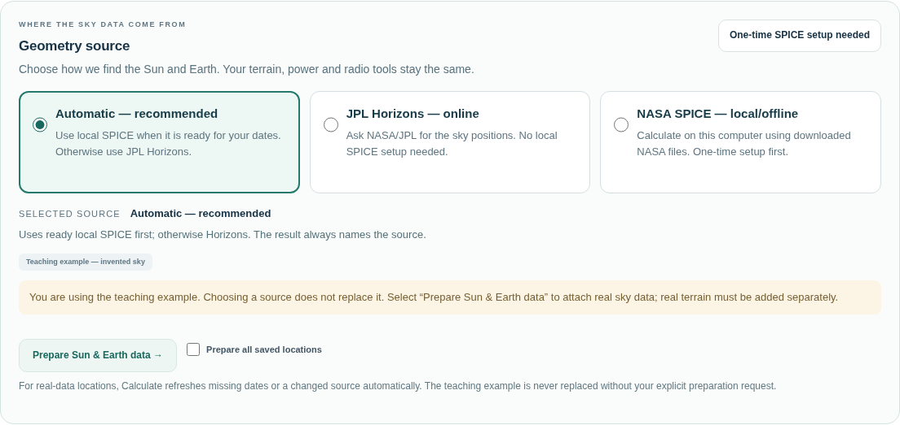
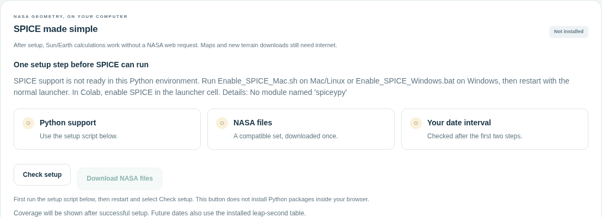
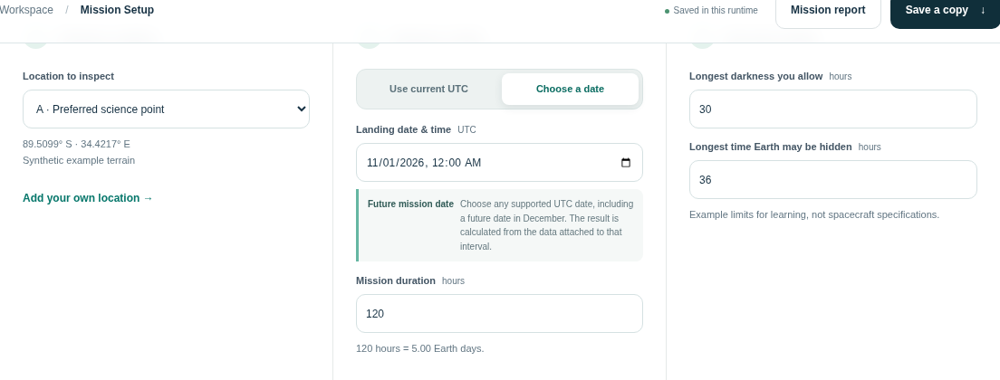
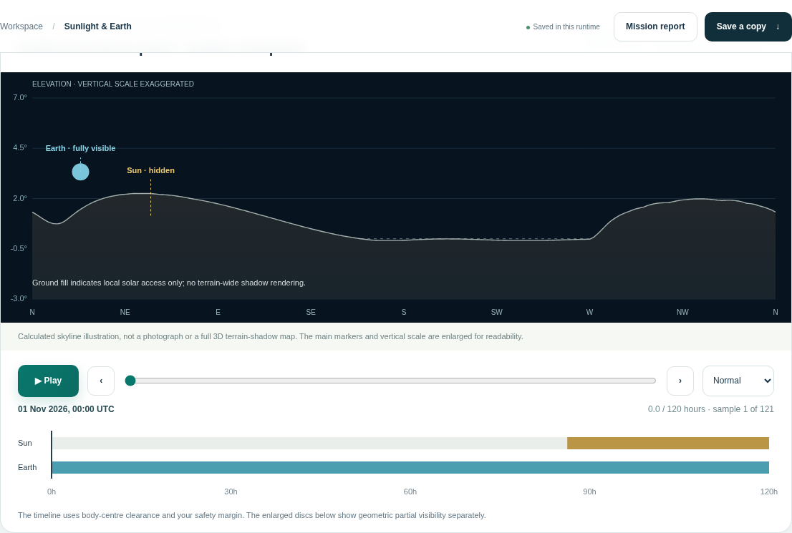
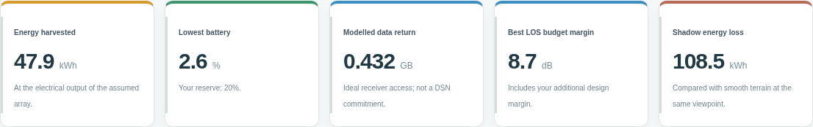
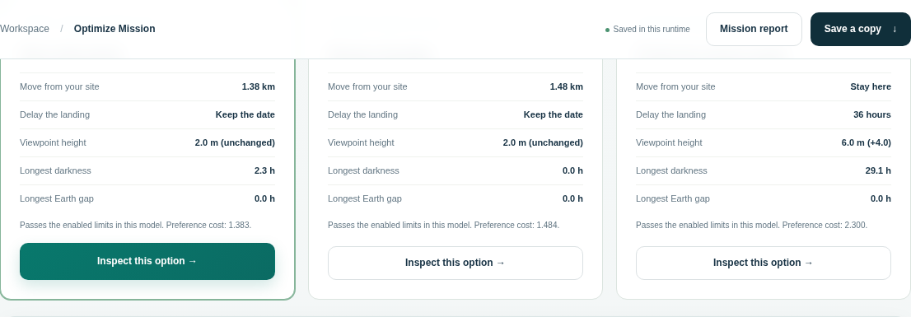

LunaShift Mission Planner
Version 0.5.0 · Open the illustrated PDF
01 / A FRIENDLY START
Your Moon-planning workspace
LunaShift Mission Planner · Version 0.5.0
Start with one place and one date. The platform checks when the Sun and Earth clear the terrain, then estimates how your panel, battery and radio would perform.

The new source selector is inside Mission Setup. This screenshot shows the teaching workspace.
What changed?
You can now use Automatic, JPL Horizons or NASA SPICE from the normal interface. SPICE is no longer only a separate export script.
Your first tour
Mission Setup → Sunlight & Earth → Power & Communications → Compare Options → Optimize Mission. Use Data & Sources to check what the answers are based on.
Start without pressure. Keep the opening example and learn the buttons first. Its terrain and sky are invented. The screenshots in this guide use that example; they are not real lunar forecasts.
Choose your launch page: Mac: page 2. Windows: page 3. Google Colab: page 4. Geometry choices: page 5. SPICE setup: page 6.
02 / START ON A MAC
Open LunaShift on your Mac
First setup installs SPICE. Later starts are shorter.
1. Save your old work, then extract the new ZIP
In the old app, click Save a copy. Stop its Terminal with Control + C. Extract LunaShift_v5.zip into Downloads. Keep it separate from earlier versions.
You need Python 3.10 or newer. In Terminal, run python3 --version. If Python is missing, install it from the official Python website.
2. Open Terminal and paste these two lines
cd "$HOME/Downloads/LunaShift_v5"
bash Enable_SPICE_Mac.sh
The script creates a private Python environment, installs SPICE support, downloads about 19 MB of NASA files and opens the app. The first setup needs internet. Your system Python is not replaced.
3. Open the local website
http://127.0.0.1:8765
Keep Terminal open while you use the app. Look for v0.5.0 in the sidebar. If an older screen appears, stop the old server and refresh the browser.
Next time, use these lines
cd "$HOME/Downloads/LunaShift_v5"
.venv/bin/python run.py
Real terrain files? From the same folder, run bash Enable_Real_Data_Mac.sh once to add the optional GeoTIFF tools. SPICE itself does not read terrain.
To stop: Control + C in Terminal. To restore your previous project: Data & Sources → Open a saved workspace.
03 / START ON WINDOWS
Open LunaShift on Windows
Use the launcher files. You do not need to edit Python code.
1. Check Python and extract the ZIP
Install Python 3.10 or newer from python.org. Enable the installer’s Add Python to PATH option. Right-click LunaShift_v5.zip → Extract All. Do not run from the ZIP preview.
2. First time: enable SPICE
Enable_SPICE_Windows.bat
Double-click that file inside the extracted folder. It creates a private environment, installs the Python support, downloads the matching NASA files and starts the platform. Keep the window open.
3. Open the app in your browser
http://127.0.0.1:8765
If the NASA files cannot be downloaded, the app can still open. Read the message in Data & Sources → SPICE made simple rather than assuming SPICE is ready.
For later sessions
Start_Windows.bat
Double-click this normal launcher. It uses the private SPICE environment when one exists. Press Control + C in the command window to stop.
Optional: add real-terrain file support
Open PowerShell in the extracted app folder and run:
.\.venv\Scripts\python.exe -m pip install -r requirements-terrain.txt
Then restart with Start_Windows.bat. Only terrain import needs these extra packages.
Before upgrading again, click Save a copy. Move your exported JSON, not the old virtual-environment folder.
04 / START IN GOOGLE COLAB
Use only your browser
Useful on Mac or Windows when you do not want a local installation.
1. Upload the notebook
Open Google Colab. Select File → Upload notebook and choose LunaShift_v5_Colab.ipynb.
2. Run “Upload and launch”
Press the play button beside the first code cell. When asked, upload LunaShift_v5.zip. Keep it as a ZIP; do not upload the extracted folder.
3. Leave these settings on
INSTALL_SPICE = True
DOWNLOAD_SPICE_KERNELS = True
INSTALL_REAL_DATA = True
The cell installs the tools and opens LunaShift below it. Use a CPU runtime; this release does not use CUDA. The first setup needs internet.
4. Work inside the embedded app
Select your geometry source in Mission Setup. In Colab, “local SPICE” means local to Google’s running computer, not installed on your Mac. You do not enter a Mac Downloads path.
5. Save before disconnecting
Run Download my workspace in the notebook. Keep the JSON file. In your next session, start the app again and open that saved workspace.
Colab is temporary. If the runtime is deleted, installed packages and NASA files must be set up again. A saved notebook alone does not save the app’s workspace.
If the display disappears, run Diagnostics / display the app again. The notebook also includes an optional actual-SPICE check and source-connection report.
05 / PICK A GEOMETRY SOURCE
Where do the sky positions come from?
“Geometry” simply means where the Sun and Earth are from your location.
Three choices; the attached-source label beneath them shows what your current site is actually using.
Automatic — recommended
When a new track is needed, use local SPICE if its files and your dates are ready. Otherwise ask JPL Horizons. The result records which source was used and why.
JPL Horizons — online
Use this when you prefer an online request. It does not require local kernels. If the request fails, the app tells you; it does not quietly switch to SPICE.
NASA SPICE — local/offline
Use this after SPICE setup. The sky positions are calculated locally. If files or date coverage are missing, you get a setup message—not an invented or silently substituted answer.
Choosing is not preparing. After choosing a source, press Prepare Sun & Earth data. The teaching example stays unchanged until you explicitly do this. Existing external CSV can remain in use under Automatic; prepare again to replace it.
06 / SPICE SETUP
Make SPICE ready once
Open Data & Sources → SPICE made simple.

First-time setup state. This is a real interface screenshot, not a simulated “ready” result.
Read the three checks
Python support: the current app environment can import SpiceyPy. NASA files: the compatible files are present. Your date interval: the files cover your requested mission.
What should I click?
Run the setup script from page 2 or 3 first. Then click Check setup. If Python support is ready but files are missing, click Download NASA files. Return to Mission Setup and select Prepare Sun & Earth data.
You do not need to pick technical kernel filenames. This release manages one matched DE421 / MOON_ME_DE421 set. It is chosen for compatibility, not advertised as the newest ephemeris. The app checks coverage from the loaded files.
Optional: compare the two engines
Expand Compare SPICE with Horizons and run the comparison. It checks the first 24 mission hours and leaves your attached data unchanged. Differences are a diagnostic, not a flight-accuracy certificate.
Offline means sky calculations. New map imagery or terrain downloads may still need internet. Real-kernel execution could not be verified in the build environment; use the local setup check and comparison on your computer.
07 / A REAL PLACE AND REAL INPUTS
Choose a location you can investigate
Lunar Map chooses the place. Data & Sources prepares the information.
Lunar Map: pick and save
Connect to the NASA map. Pan, zoom and click a point, or enter latitude and east longitude. Give the point a name and click Save candidate. A saved marker is not a claim that the land is safe.
If the map service is unavailable: use coordinates or an existing saved site. The app reports the connection problem. A coarse image fallback is visual context, not terrain for calculations.
A real analysis needs two different things
1. Ground data. Attach a compatible LOLA/PGDA elevation file or a terrain-skyline CSV for the selected point. Check the frame, height units, coverage and resolution. The optional terrain tools read GeoTIFF files.
2. Sky data. Choose Horizons or SPICE, choose the date, then prepare the Sun/Earth tracks. Preparing real sky data does not replace invented terrain.
An easier first real-data exercise
In Data & Sources, use Load a real NASA example after optional terrain support is installed. It attempts a real elevation download and prepares the sky with your selected source. It commits the workspace only when the complete operation succeeds.
That example uses a raster-centre candidate and a limited terrain area. It is not an approved landing point. Confirm the source labels before reading the results.
Useful official links
Moon Trek: explore imagery
PGDA: elevation and slope data
Horizons: online sky calculations
For CSV files, the app shows the required columns. Use docs/DATA_FORMATS.md for exact formats. A filename alone never proves that a dataset matches your site.
08 / CHOOSE WHEN
Now, December, or another date
Mission Setup controls the location, time, duration and limits.

The same setup works with either geometry engine. The fields shown here belong to the teaching example.
To try a future mission
Choose December 15, 2026, 00:00 UTC and a duration of 168 hours. That mission ends on December 22, 2026, 00:00 UTC. Select the source, prepare the sky data, then click Check my plan.
To use the current time
Click Use current UTC. This inserts the current time once. It is not a continuously connected Moon camera or live spacecraft telemetry. Recalculate after changing the date.
Set limits you understand
Start with the longest darkness you allow and the longest gap without Earth visibility. The example limits are only teaching values. Under More settings, adjust viewpoint height, slope limit, safety margin and time spacing.
Watch the data coverage. A future date is valid only when the sky data cover the full interval. For a real site, missing dates or a changed explicit source are prepared during calculation. The teaching example is not silently replaced.
A shorter calculation step shows more timing detail but takes more work. Preparing all saved locations is helpful before comparing them.
09 / SUNLIGHT & EARTH
Watch the view change with time
This page explains why the lander has light—or loses its view of Earth.

Actual interface using invented teaching data. The skyline is an illustration, not a photograph.
Click Calculate visibility, then Play. Pause, drag the slider or use the previous/next buttons. The timestamp, Sun, Earth and timelines use the same mission clock.
Choose Whole horizon, Follow Sun or Follow Earth. The enlarged discs show fully visible, partly visible or hidden. The timeline uses body-centre clearance plus your chosen safety margin; these are related but not identical displays.
Two different shadow views: the local skyline uses attached terrain. The map’s day/night overlay uses a smooth lunar sphere, not every crater’s shadow. NASA Eyes and the reference animation are separate viewers with their own time controls.
10 / POWER & COMMUNICATIONS
Turn visibility into a lander estimate
Start with three simple numbers. Open advanced settings only when needed.

Example output cards from the teaching dataset. Their values are not measurements from a real lander.
1. Choose your hardware
Enter solar-panel area, battery capacity and desired returned data. Presets are illustrative, not official spacecraft specifications. Expand settings to adjust orientation, efficiencies, power demand and radio assumptions.
2. Click “Check power & communications”
Read the top result first. Then look at harvested energy, the lowest battery level, the radio margin and the amount of data returned. The charts share one time cursor.
3. Understand what is limiting the mission
Sunlight does not automatically mean enough electrical power. The panel angle, area and losses matter. A radio budget can be positive while terrain blocks Earth. Data return also needs energy and stored data to transmit.
4. Try a small change
Increase panel area or battery capacity and run again. Under Find tested repairs, try saved locations, selected panel/battery multipliers and optional 12/24-hour delays.
These are engineering estimates. The radio model is Earth-centre line-of-sight with a generic receiver, not a booked DSN station. Detailed thermal dynamics, measured fading and flight qualification are not included.
11 / COMPARE AND IMPROVE
Find a better option—and see why
Change one thing at a time so the result is easy to understand.

Example repair cards from the teaching workspace. The app searches the allowed, tested combinations.
Compare Options
Keep the same date, duration and limits. Compare your saved sites by sunlight, longest darkness, Earth visibility and the stated failure reason. For the same hardware at different sites, use the table on Power & Communications.
Optimize Mission
Choose what may change: saved location, landing delay or viewpoint height. Click Find better options. Read the change and result on each card. Use Inspect to view an alternative; you can restore the original plan.
Hardware repairs are on the power page
Use its repair button for larger panels or batteries. These tests must satisfy the visibility checks and the hardware checks. They are separate from the location/time/height search.
“Best” means best among the tested options. This is not a global search of the whole Moon and not a guaranteed minimum-cost spacecraft design. Missing data stay unknown; extra delays require extra sky-data coverage.
12 / SAVE, SHARE AND GET UNSTUCK
Keep your work—and know its limits
Save a copy before upgrades, long experiments or closing Colab.
Save and reopen
Click Save a copy to download workspace JSON. Open it later from Data & Sources → Open a saved workspace. It keeps the numerical data, actual geometry source and settings. It does not include installed packages, kernel binaries or your original large raster files.
Share with your group
Send the app ZIP and the exported JSON. Each teammate starts their own app. 127.0.0.1 opens only on the computer running the server; it is not a public website. Use Help & Guide for the tour and this PDF.
When something does not work
“SPICE not installed”: run the setup script, then restart with the private environment.
“NASA files missing”: check internet, then retry Download NASA files.
“Dates not covered”: choose a supported interval or explicitly select Horizons.
No moving sky: calculate first; check the site has terrain and tracks.
Old screen: stop the older server and refresh. Confirm v0.5.0.
What was tested: 203 Python tests and 200 scripted interface checks. Actual SPICE-kernel execution, live NASA downloads, native Mac/Windows launch and signed-in Colab were not verified in the build environment. Use the in-app checks on your computer. This is decision support, not flight certification.
Technical details when you need them: docs/SPICE.md, docs/DATA_FORMATS.md and docs/TEST_REPORT.md. Run tools/verify_spice.py with your SPICE-enabled Python for an actual-kernel check.
Official references: NASA kernels · Matching lunar frame · CSPICE geometry · SpiceyPy installation